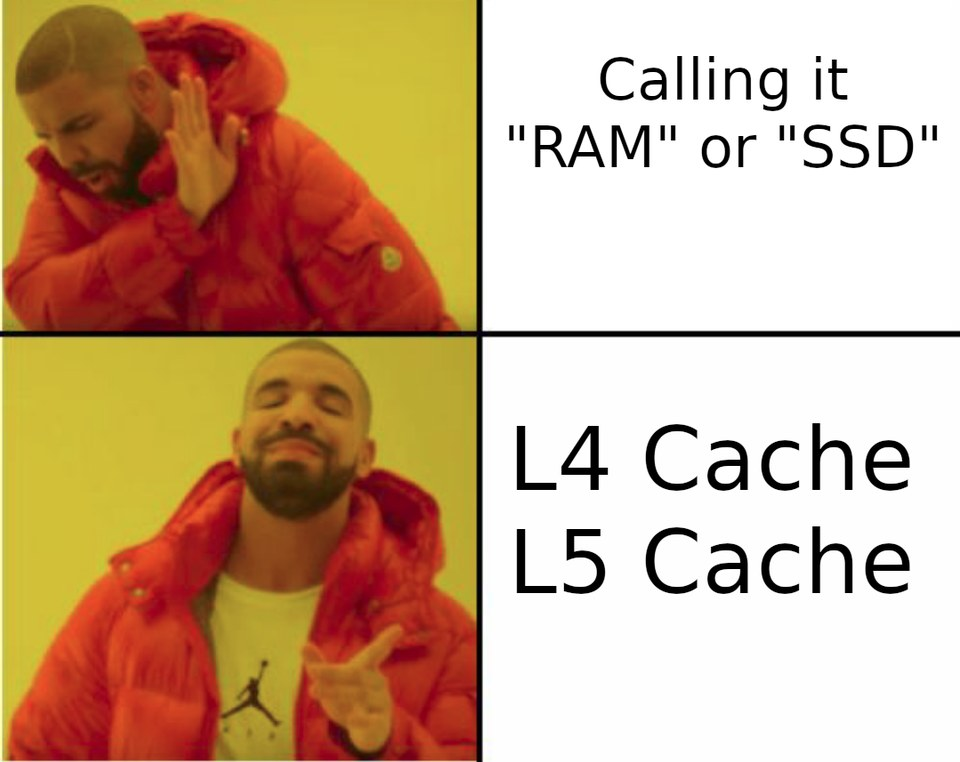
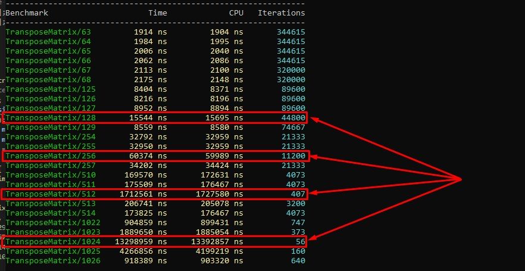
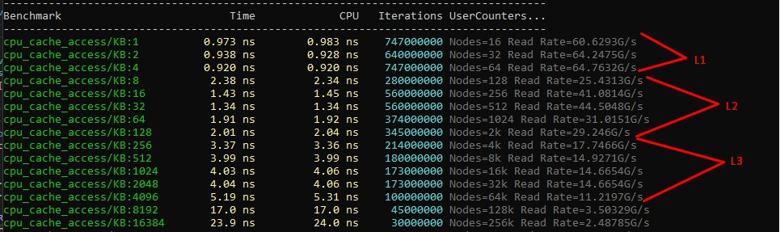

Ti sei mai posto una domanda apparentemente banale: perché una CPU ha in generale dei livelli di cache, se si potrebbe semplicemente mettere una sola grande cache? La risposta a questa domanda è strettamente intrecciata con la fisica dei semiconduttori, la storia dell'architettura dei processori e il modo in cui i compilatori hanno imparato a sfruttare la gerarchia della memoria.
La prima cosa da capire: un processore non è una calcolatrice astratta, è un pezzo di silicio molto reale, grande più o meno come un'unghia, che contiene miliardi di transistor. Quando diciamo «i dati vengono trasferiti dalla memoria in un registro», intendiamo letteralmente che un segnale elettrico percorre un filo metallico lungo qualche millimetro o centimetro. Anche quella è una distanza — trascurabile per gli standard umani, ma a una frequenza di clock di 3–4 GHz conta già, semplicemente perché in un ciclo un segnale percorre al massimo circa 10 centimetri in condizioni ideali, e ancora meno lungo un filo metallico sul die.
In altre parole, il percorso di un segnale lungo un filo tra due punti del chip non è un teletrasporto istantaneo dei dati, perché è un mezzo fisico con ritardo, resistenza e consumo energetico proporzionali alla lunghezza — ed è proprio questa limitazione fisica a rendere impossibile una singola cache grande: più lontana dal core si trova una cella di memoria, più a lungo bisogna aspettare una risposta.
La fisica detta l'architettura
Se prendessi l'intera cache di una CPU moderna, qualcosa intorno ai 2 MB, e la trasformassi in un unico grande magazzino, il core dovrebbe fare quel tragitto a ogni accesso e aspettare che il segnale viaggi, magari fino all'angolo più lontano, e torni indietro. E più grande è la cache, più complessa è la sua logica di indirizzamento, più energia si spende a ogni accesso e peggiore è la densità. Le celle veloci di SRAM L1 occupano molta più area di tutta la lenta L2, così i progettisti dei chip sono infine arrivati a una gerarchia naturale: una cache piccola e veloce proprio accanto al core, poi una più grande e più lenta più in là, e una ancora più grande e ancora più lenta oltre.
Per cogliere la logica della gerarchia non in astratto ma con un esempio chiaro, immagina di decorare un albero di Natale in una sera di dicembre, appendendovi le decorazioni. In mano hai una scatolina che contiene cinque o sei decorazioni appena scelte, e prenderne una qualsiasi richiede un paio di secondi — questa è la nostra cache L1, proprio a portata di mano.
Accanto a te, su una sedia, c'è una scatola di cartone in cui il giorno prima hai rovesciato le decorazioni dalla tua riserva, e per tirarne fuori qualcosa devi allungarti, frugare un po', trovare la forma o il colore giusto. Tutto ciò richiede più tempo — ed è la cache L2: notevolmente più grande, un po' più lenta, ma sempre a portata dallo stesso posto.
Ma nemmeno la scatola è senza fondo, e a un certo punto finisce il tipo di decorazione che ti serve, e allora devi andare nella stanza accanto, dove c'è il grande sacco con la riserva principale. Cioè, devi alzarti, uscire, frugare nel sacco, trovare quello che vuoi e tornare — una pausa nell'impresa non così semplice di addobbare l'albero, e ci vuole una quantità di tempo notevole. Questa è la nostra cache L3, con una grande capacità, il cui accesso richiede sforzo e tempo, ma dove c'è quasi tutto.
E infine, su in soffitta, c'è un vecchio cassettone che contiene decorazioni natalizie che risalgono ai tempi sovietici: rare, interessanti, ma arrivarci equivale a una spedizione — devi trovare una scala, salire e cercare qualcosa in mezzo a quel disordine. Mentre lo fai, il lavoro all'albero si ferma del tutto — è l'analogo della RAM, con una capacità enorme, ma la latenza è così grande che in quel tempo avresti potuto appendere una dozzina di decorazioni. Ti suona familiare?
E nota che mentre ti raccontavo questa analogia, non ti è mai venuto in mente di rimuovere tutti e quattro i punti di stoccaggio e sostituirli con un unico gigantesco scaffale lì nella stanza. Formalmente sarebbe «tutto in un posto», ma la scatola che hai in mano smette bruscamente di essere la scatola che hai in mano e diventa un angolo di un enorme scaffale verso cui devi comunque allungarti, e tutto il vantaggio dell'«a portata di mano» svanisce. È esattamente per questo che non puoi semplicemente prendere 32 KB + 256 KB + 2 MB e impilarli in un'unica L1 — perché una cache fisicamente grande non può essere fisicamente veloce.
Contesto storico
La gerarchia delle cache nei processori non è apparsa tutta in una volta, e la storia del suo sviluppo illustra bene quanto questa decisione sia stata dettata da vincoli fisici ed economici piuttosto che da considerazioni teoriche. I primi processori della fine degli anni '70 non avevano alcuna cache hardware e lavoravano direttamente con la memoria esterna, e le latenze erano paragonabili a un singolo ciclo, quindi non c'era quasi nessun divario e il problema era impercettibile.
Quando, all'inizio degli anni '80, i processori cominciarono a diventare più veloci della memoria, i produttori aggiunsero una piccola cache, prima sulla scheda e poi sul die. Nel 1989 uscì l'i486, che divenne il primo processore di massa con una cache L1 sul die, unificata per istruzioni e dati. E più o meno nello stesso periodo i compilatori (prima di tutto Borland C++) cominciarono ad applicare il concetto di località dei dati, ottimizzando la disposizione delle variabili e l'ordine delle dichiarazioni nelle strutture e cercando di collocare i campi caldi uno accanto all'altro — sebbene i compilatori non avessero ancora un modello formale della cache, e tutto ciò venisse fatto empiricamente.
Il Pentium nel 1993 divise la cache in due (per i dati e per le istruzioni), perché i diversi requisiti fisici dei due tipi di traffico si riflettevano finalmente nell'hardware. I compilatori ne tennero conto gradualmente anche loro, e i binari cominciarono a separare più accuratamente le sezioni di codice e di dati, mentre GCC acquisì ottimizzazioni di allineamento delle funzioni per migliorare l'hit rate della cache istruzioni. Con il Pentium Pro nel 1995, la cache L2 fu spostata per la prima volta su un chip separato, e la gerarchia divenne esplicita e a due livelli. E all'epoca di Nehalem (2008) si era ormai delineato il familiare schema a tre livelli, con L1I e L1D separate, una L2 unificata per core e una L3 condivisa.
LLVM, apparso proprio in questo periodo, assorbì la conoscenza precedente e fu progettato fin dall'inizio tenendo conto di questa gerarchia, inclusi i pass per il loop tiling, il prefetching e la disposizione dei dati caldi.
Tipi di accesso diversi richiedono strutture diverse
Spesso si trascura che L1D (la cache dati) e L1I (la cache istruzioni) sono dispositivi fondamentalmente diversi con requisiti diversi, ed è proprio per questo che non possono essere unite in una sola nemmeno a parità di capacità. L1D legge e scrive singoli elementi da 1 a 8 byte di dimensione e deve supportare simultaneamente diverse porte di lettura e scrittura, gestire lo store forwarding e tracciare la coerenza con gli altri core. L1I, dal lato del core, è rigorosamente di sola lettura, il che permette di semplificare enormemente la sua logica, ma in cambio deve fornire una banda enorme — per esempio, i chip Intel Core i7 che leggono da L1I possono leggere 16 byte a ogni ciclo, il che a 3 GHz dà nell'ordine di 50 GB/s per le sole istruzioni. Se sommi il traffico di picco delle istruzioni e il traffico di picco dei dati, i requisiti per una cache unificata risultano mutuamente esclusivi, e cercare di costruire una cache universale per entrambi i compiti significherebbe peggiorarli entrambi.
Un'altra ragione fondamentale per avere livelli di cache separati sta nel separare lo spazio privato da quello condiviso. Tornando all'analogia dell'albero: la scatola che hai in mano è esclusivamente tua, e nessun altro (tranne tua moglie — scherzo) ci mette le mani dentro, ed è proprio per questo che puoi lavorarci senza alcuna condizione. L1D è privata e permette al core semplicemente di leggere e scrivere senza alcun coordinamento, ed è questa privatezza a dare quell'accesso in un singolo ciclo così importante per la pipeline. L1I è privata per ovvie ragioni.
Anche L2 è privata, ma si fa già carico di parte del traffico del bus e dell'interazione con gli altri core, il che naturalmente influisce sulla sua velocità. L3, invece, è una risorsa fisicamente condivisa, come il sacco di decorazioni che in linea di principio ogni membro della famiglia può usare, ed è proprio per questo che l'accesso a essa richiede coordinamento attraverso un protocollo di coerenza (MSI, MESI, MESIF, MOESI, MOSI, MOESIF, STANFORD DASH, SGIODP); la scommessa qui è che i due livelli precedenti abbiano già ridotto abbastanza il numero di accessi da impedire che il coordinamento diventi il collo di bottiglia.
Chi sono tutte queste persone?
MSI è uno dei primi protocolli di coerenza della cache. Usa tre stati: Modified, Shared e Invalid. Quando un processore modifica dei dati, la linea passa allo stato Modified e tutte le altre copie nelle cache diventano Invalid; se i dati vengono letti da più core, la linea è nello stato Shared.
Il problema di MSI è che non ha uno stato Exclusive, quindi anche se una linea è usata da un solo core, il sistema non lo sa, e di conseguenza si verificano operazioni di bus superflue nel passaggio alla scrittura, aumentando il traffico e riducendo le prestazioni.
MESI estende MSI aggiungendo lo stato Exclusive. Se una linea di cache è presente in una sola cache e coincide con la memoria, ottiene lo stato Exclusive, e questo permette al processore di passare a una scrittura senza sincronizzazione aggiuntiva con le altre cache.
Lo svantaggio di MESI si manifesta nei sistemi con molti core: quando i dati sono condivisi, le linee si spostano spesso tra gli stati Shared e Modified, causando traffico di bus superfluo e cache line bouncing.
MOESI aggiunge lo stato Owned a MESI e permette a una cache di mantenere una linea modificata e condividerla con altre cache allo stesso tempo senza scriverla immediatamente nella memoria principale. Le altre cache possono leggere questa linea nello stato Shared, mentre il proprietario rimane responsabile dei dati aggiornati.
Lo svantaggio di MOESI è la logica di gestione degli stati più complessa, e il supporto dello stato Owned complica l'implementazione hardware e può aumentare la latenza nei sistemi dove le scritture in memoria avvengono spesso.
MESIF si basa su MESI e aggiunge lo stato Forward: quando più cache contengono la stessa linea, una di esse viene designata Forward ed è responsabile di passare i dati agli altri core in una lettura, il che evita la situazione in cui più cache cercano di rispondere a una stessa richiesta contemporaneamente.
Lo svantaggio del protocollo si manifesta nei sistemi con scritture intensive: quando i dati cambiano frequentemente, lo stato Forward non porta alcun beneficio significativo, mentre gli stati aggiuntivi aumentano la complessità implementativa.
MOSI è una versione semplificata di MOESI senza lo stato Exclusive, ma che usa gli stati Modified, Owned, Shared e Invalid con la possibilità di condividere una linea modificata attraverso lo stato Owned, il che riduce il numero di scritture in memoria.
Lo svantaggio è l'assenza dello stato Exclusive: anche se una linea è usata da un solo core, il sistema non può ottimizzare il passaggio a una scrittura, il che porta a traffico di coerenza aggiuntivo.
MOESIF combina le idee dei protocolli MOESI e MESIF e contiene gli stati Modified, Owned, Exclusive, Shared, Invalid e Forward, il che gli permette di ottimizzare simultaneamente il trasferimento di dati tra le cache e di condividere linee modificate senza scriverle immediatamente in memoria.
Lo svantaggio è l'elevata complessità implementativa con un gran numero di stati, che aumenta la complessità della logica hardware e può portare a latenza aggiuntiva nelle transizioni tra stati.
Stanford DASH è uno dei protocolli di coerenza, e a differenza di MESI, dove tutti i processori fanno snooping su un bus condiviso, qui si usa una tabella speciale che memorizza informazioni su quali cache contengono una specifica linea di memoria. Quando un processore vuole leggere o modificare una linea, consulta la tabella per sapere quali processori hanno copie della linea e invia loro messaggi, il che permette al sistema di scalare a decine e centinaia di processori senza sovraccaricare il bus condiviso.
Lo svantaggio di questo approccio è la memoria e la latenza aggiuntive associate alla memorizzazione e all'aggiornamento della tabella, e ogni accesso può richiedere messaggi di rete aggiuntivi, il che aumenta il tempo complessivo rispetto ai protocolli semplici nei sistemi piccoli.
Il SGI Origin Directory Protocol (ODP) era usato nei sistemi multiprocessore SGI Origin 2000, dove le informazioni sui proprietari delle linee di cache sono memorizzate in una tabella distribuita legata ai nodi di memoria. Quando un processore modifica dei dati, traccia tutte le cache che contengono copie della linea e trasmette messaggi di invalidazione, il che permette al sistema di scalare efficientemente a un gran numero di processori e nodi di memoria.
Lo svantaggio è la complessità implementativa e l'alto costo dello scambio di messaggi tra i nodi, e l'accesso alla memoria remota può avere latenza significativamente più alta, mentre i messaggi di directory possono creare carico aggiuntivo sull'interconnessione tra i nodi.
Come tutto questo influisce sulla programmazione
Tutto ciò avrebbe interesse meramente teorico se non influisse direttamente sul modo in cui il codice viene scritto e compilato, perché il codice che elabora i dati in modo sequenziale e prevedibile gira parecchie volte più veloce del codice che fa la stessa cosa in modo caotico. L'esempio classico qui è l'attraversamento di un array bidimensionale: se il ciclo esterno scorre le righe e quello interno le colonne, i dati finiscono nella cache una linea alla volta per diverse iterazioni; se scambi i cicli, ogni accesso a un nuovo elemento è un cache miss e un viaggio in L3 o DRAM per un array grande. La differenza di prestazioni su compiti reali come la moltiplicazione di matrici o l'ordinamento può raggiungere dieci volte o più, ed è proprio per questo che i compilatori hanno imparato a fare loop interchange, loop tiling e inserimento di prefetch automaticamente. Se vuoi maggiori dettagli tecnici, vai qui: Inquinamento della cache? Fai scorta di test

La famosa distinzione tra AoS (Array of Structures) e SoA (Structure of Arrays) è anch'essa una conseguenza diretta del fatto che la cache L1 lavora in linee da 64 byte: se elabori un solo campo di un oggetto mentre l'oggetto stesso pesa 128 byte, carichi zavorra inutile nella cache e dimezzi la capacità effettiva della cache per la logica corrente.

Ma ci serve una cache L4?
Se la logica della gerarchia è che ogni nuovo livello porta un guadagno grazie a una capacità maggiore con una latenza accettabile, allora sorge una domanda ragionevole: «perché ci siamo fermati a tre livelli e non ne abbiamo aggiunto un quarto?». La risposta, come sempre, sta nella fisica del processore, nell'economia dello sviluppo e nei pattern d'uso reali — e, cosa interessante, una cache L4 esiste già in alcuni sistemi, semplicemente non la chiamiamo così.
Tornando all'analogia dell'albero: immagina di aver messo un'altra scatola intermedia tra la soffitta e la stanza accanto con il sacco. Formalmente questo potrebbe accelerare l'accesso a una parte delle decorazioni del cassettone — se dovessimo andare spesso in soffitta, basterebbe afferrare un set di decorazioni sulla via del ritorno e poi limitarsi a dare un'occhiata alla scatola nel corridoio.
Ma, come ho già detto, il guadagno è apprezzabile solo se dobbiamo davvero andare spesso in soffitta — cioè se il nostro working set è abbastanza grande da non entrare nel sacco ma è ancora necessario abbastanza spesso da giustificare la scatola nel corridoio. Se invece prendiamo qualcosa di nuovo dalla soffitta ogni volta, la scatola nel corridoio aggiunge solo altro trambusto senza alcuna accelerazione, mentre aggiunge tempo speso su di essa e problemi ulteriori.
È proprio questa considerazione a determinare il destino della cache L4 nei processori reali: ha senso solo quando il working set di un programma supera sistematicamente la capacità di L3 pur restando abbastanza caldo da rendere gli accessi a DRAM il collo di bottiglia. Un simile pattern di accesso alla memoria è uno scenario piuttosto specifico, tipico dei database server, dei grandi carichi di telemetria e di alcune applicazioni grafiche come i renderer di film. Per una tipica applicazione desktop, una L3 di 8–32 MB copre più che abbondantemente la maggior parte dei working set, e aggiungere un altro livello semplicemente non porterà un guadagno apprezzabile.
Ciononostante simili applicazioni a volte si insinuano nello sviluppo ordinario, e per esse ci sono già stati diversi tentativi di costruire una cache L4 a tutti gli effetti. L'esempio più noto è stato Intel Haswell-GT3e con la sua eDRAM, rilasciato nel 2013–2014. Lì un die eDRAM separato da 128 MB era collocato sul package accanto al die del processore, fungendo da cache di quarto livello condivisa per la CPU e la GPU integrata al tempo stesso. La latenza dell'eDRAM era più alta di quella delle cache SRAM, ma parecchie volte più bassa di quella della comune DDR3/DDR4, e per compiti grafici come il montaggio di film e il rendering pesante, dove il working set delle texture superava facilmente le decine di megabyte, il guadagno era tangibile — nell'ordine di 2x–3x per rimontare i film, il che in termini di tempo trasformava l'elaborazione di un film di 2 ore da 12–14 ore a poche ore soltanto.
Il compilatore, intanto, non sapeva nulla di questo livello ed era del tutto trasparente al software, con il prefetcher hardware che decideva da sé cosa metterci. Intel continuò a sperimentare questa idea nella linea Iris Pro fino a Kaby Lake, ma alla fine la abbandonò, perché la complessità e il costo di produzione di un simile processore ne facevano una soluzione molto di nicchia.
Parallelamente, un approccio simile si stava sviluppando nel mondo dell'HBM (High Bandwidth Memory). L'idea di una memoria con un bus molto ampio, che AMD e Intel cominciarono a integrare nelle GPU ad alte prestazioni e nei processori server, è essenzialmente un die SRAM aggiuntivo accanto alla comune cache — e questo è, di fatto, una L4 hardware, sebbene AMD la posizioni come una L3 estesa. Il guadagno per i carichi server si rivelò significativo, fino al 50% di miglioramento delle prestazioni in certi compiti server, così la tecnologia divenne standard per il segmento server.
Quanto ai compilatori, un supporto esplicito per L4 non è mai apparso in essi, e operano tutti secondo il modello «i dati caldi devono entrare nella cache» senza specificare un livello concreto (questa è una storia a parte, perché poter specificare il livello di storage desiderato libererebbe fino al 20% di prestazioni nei giochi), mentre le ottimizzazioni automatiche come il loop tiling sono parametrizzate dalla dimensione della linea di cache e dalle dimensioni approssimate dei livelli attraverso vari flag come -mtune=skylake, ma non attraverso un modello esplicito dei livelli. Un controllo più fine — quando pianifichiamo noi stessi la collocazione delle strutture dati calde in huge page, con hint di prefetch espliciti via __builtin_prefetch o __mmprefetch — resta anch'esso dominio dell'ottimizzazione manuale nei casi performance-critical.
Così la cache L4 non è più fantascienza, e nemmeno il futuro, ma una realtà bell'e buona negli scenari di nicchia — eppure non dovresti aspettarti che compaia in massa nei processori desktop. Perché ogni nuovo livello della gerarchia aggiunge complessità di coerenza, costo di produzione e logica di gestione specializzata che sono giustificati solo quando il profilo del carico di lavoro lo richiede. La scatola nel corridoio tra il sacco e la soffitta aiuta davvero, ma solo se vivi accanto alla soffitta e ci sali spesso.
Di sicuro non ci serve proprio una L5?
La L5 nella gerarchia della cache della CPU non compare da nessuna parte come soluzione di produzione come livello a sé, ma questo non significa che l'idea di cinque livelli sia impossibile — semplicemente si scontra con diversi muri in una volta sola.
Ogni nuovo livello della gerarchia richiede di risolvere due problemi al tempo stesso: deve essere abbastanza veloce rispetto alla DRAM da giustificare la sua esistenza, e abbastanza economico rispetto al livello precedente in area di die o costo di produzione da avere un qualche senso. Con L4 questo funziona ancora, e le stesse eDRAM e HBM danno una latenza 3–5 volte più bassa della DDR5 a un costo ragionevole, ma L5 finisce in una situazione in cui non c'è più abbastanza divario tra essa e L4 — né in velocità né in densità — per inserirvi qualcosa di fondamentalmente nuovo.
Anche il problema della coerenza cresce in modo non lineare: ogni nuovo livello condiviso tra i core richiede di complicare il protocollo MESI/MOESI, aggiunge nuove classi di race e aumenta il tempo di accordo, creando nuove classi di conflitti sull'invalidazione. Tre livelli sono già un sistema ingegneristico complesso, quattro sfociano in soluzioni di nicchia per carichi specifici, e cinque è essenzialmente il punto in cui la complessità di gestione probabilmente comincia a divorare tutto il potenziale guadagno.
Ma non è tutto così netto, e invece di aggiungere l'ennesimo livello di cache l'industria ha imboccato altre strade che assolvono la stessa funzione nello spirito ma si chiamano in un altro modo. Come ho già scritto, AMD 3D V-Cache è formalmente posizionata come una L3 estesa, ma fisicamente è un die SRAM separato impilato sopra il chip di calcolo, e in alcuni modelli architetturali può benissimo essere considerata una L4. Intel, invece, introduce il concetto di «High Bandwidth Cache» o «Memory-side Cache», allontanandosi deliberatamente dalla numerazione — e nei sistemi server una simile entità gioca di fatto il ruolo di «L5» in termini di latenza: è più veloce del disco ma parecchie volte più lenta della DRAM locale, solo che questa non è più una cache nel senso hardware, ma solo una regione diversa dello spazio degli indirizzi con latenze diverse.
Ipotizzando, l'unico scenario realistico per una L5 sarebbero i sistemi con memoria molto eterogenea: per esempio, chip futuri con diversi livelli di memoria 3D, dove si potrebbe costruire una catena come «SRAM → EDRAM → HBM → L5? → DDR → NVM». Progetti di ricerca nella letteratura accademica descrivono simili schemi, e IBM nei suoi mainframe della serie z ha storicamente usato gerarchie di memoria non standard con più livelli di quanti sia usuale nel mondo x86, ma per il mercato di massa questa resta per ora un'area di ricerca architetturale piuttosto che di soluzioni di produzione. Tornando all'analogia dell'albero — nessuno ha ancora capito cosa mettere tra la soffitta e il cassettone in modo che sia più veloce del cassettone, più economico della soffitta e abbastanza grande da avere un qualche senso.
← Tutti gli articoli